Relief
- Winter clothes and blanket distribution, every winter
- Ramadan food support and grocery packs, every Ramadan
- Clothing drives for children
- Eid clothes and gifts (Cloth of Joy, ongoing)
- Home visits to elderly people left without family care
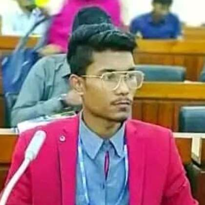
One of the eight divisional leaders of Bangladesh's 20,000-member Dhrubotara youth network, leading the whole Chattogram division as Vice-President and acting President. Founder of Human Welfare Organisation and Ayna Youth Development Foundation, and an AI engineer building health technology. More than eleven years of bringing young people together to serve their neighbours, and of training dozens of young activists to do the same.
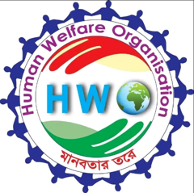
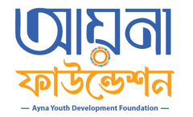
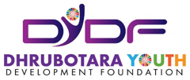
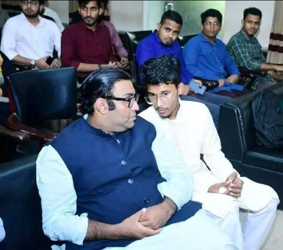
Started a welfare group as a teenager; more than eleven years later, still raising funds, training volunteers and leading the drives.
Arif (in white) with Amiya Prapan Chakraborty, CEO of DYDF, Queen's Young Leader awardee and chief guest, at the youth conference Arif organised. Arif led DYDF's Chattogram division as one of its eight divisional leaders, while founding and running HWO and AYDF in his own neighbourhood.
Founded as a teenager to raise money from neighbours and hand out winter clothes and food in his own ward. Covered by Kaler Kantho, Azadi and Suprabhat.
Founded AYDF as a lasting foundation with its own team, monthly meetings and ongoing projects: Cloth of Joy, Project Sohay, Free Education.
Vice-President and acting President of DYDF's Chattogram division, inside a 20,000+ member national network. Organised a 500+ person divisional conference.
Combine 11+ years of grassroots leadership with his AI work in health technology, and bring both back to Bangladesh at a larger scale.
These photos are a small glimpse of regular, year-round work. Most drives and meetings over 11+ years were never photographed.
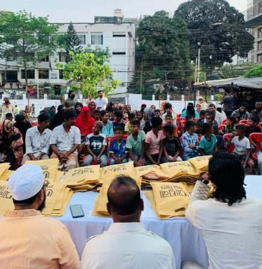
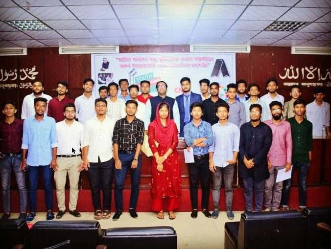
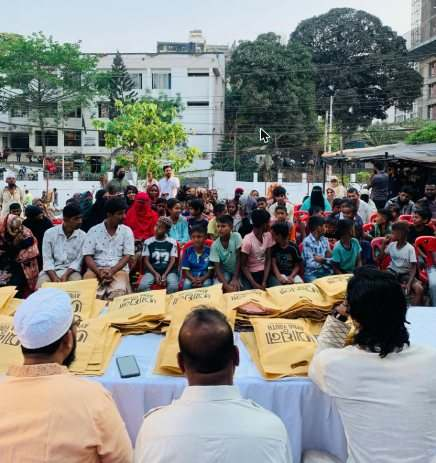
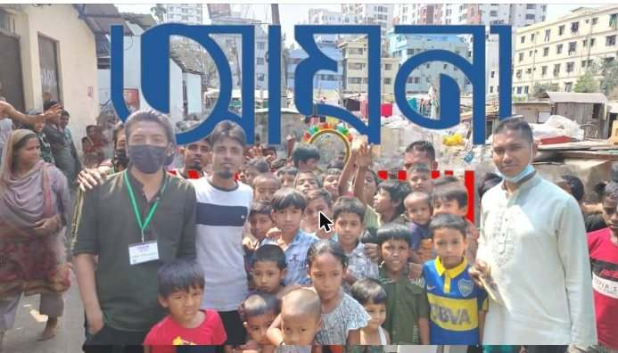
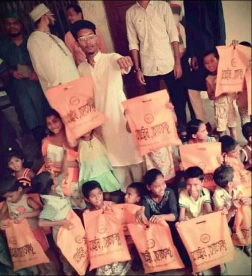
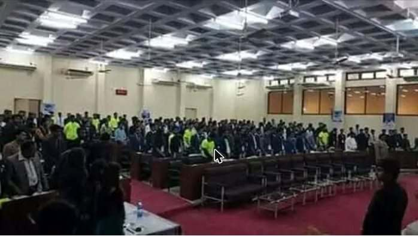
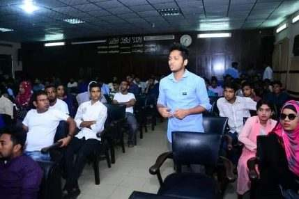
Not everyone pictured is Arif; these are programmes he founded, led or organised.
Seven newspaper and TV reports. Independent proof that the work is real.
Local newspapers and TV channels covered these drives in Chattogram: winter clothes, Eid clothes, and people helped by name and place.
Kaler Kantho, Dainik Azadi and Suprabhat Bangladesh reported HWO's winter-clothes drive in Sholokbahar and Jalalabad, Chattogram, naming founder Sheikh Mohammad Arif. News Garden 24 reported that more than a hundred orphaned children and ordinary people received new Eid clothes from AYDF, at an event presided over by Engineer Md. Arif.
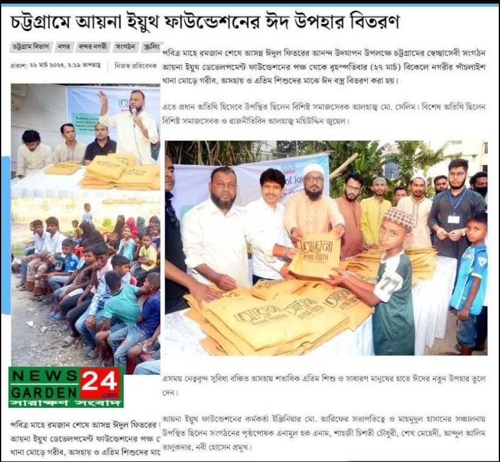
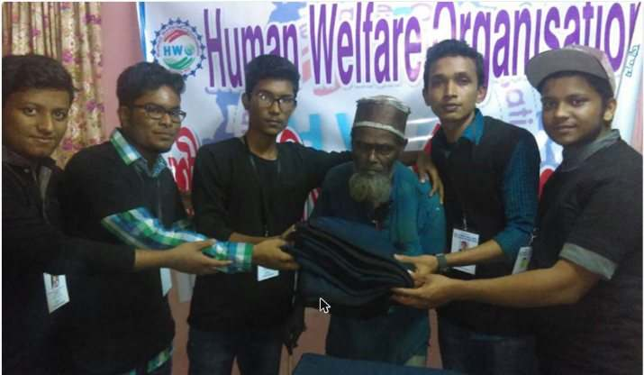
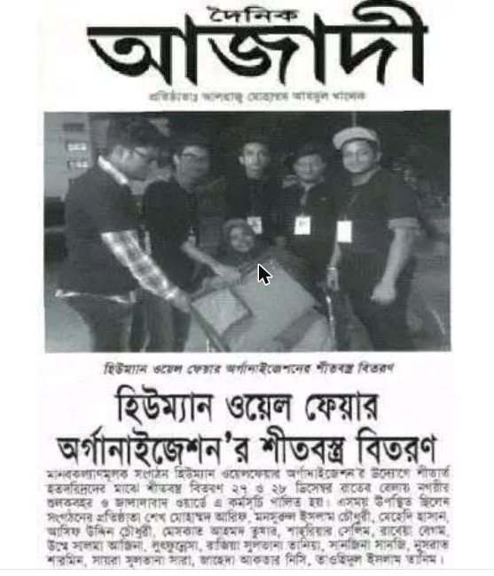
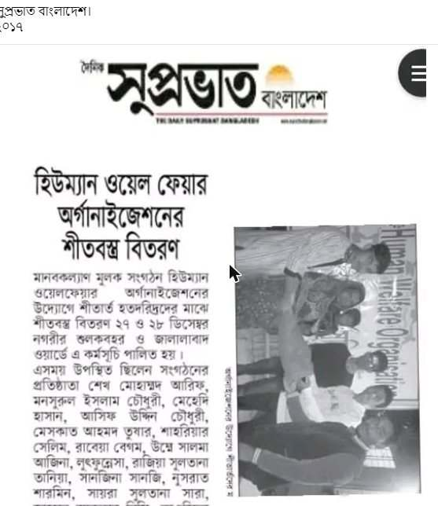
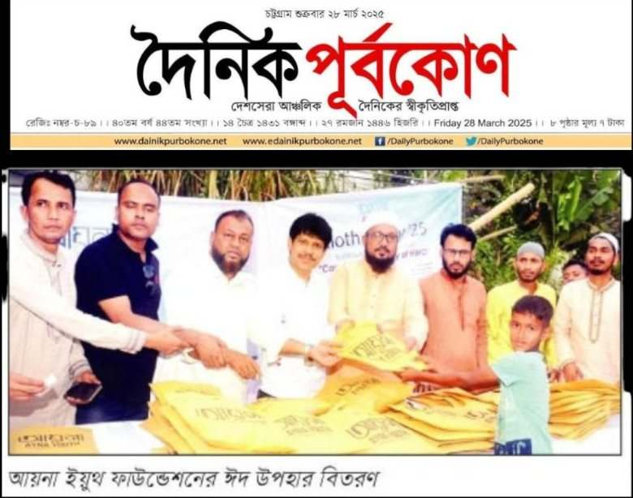
Read: Kaler Kantho article · Watch: Rajdhani TV report · Eye TV Bangla report
Drives run regularly: every winter, every Ramadan and every Eid, whenever funds can be raised. All are crowd-funded. When money ran out, drives paused; each time the team raised funds again and restarted. The work is still running. The photos below are a few moments from many such drives.
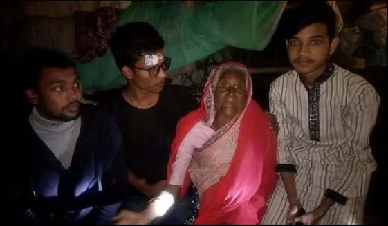
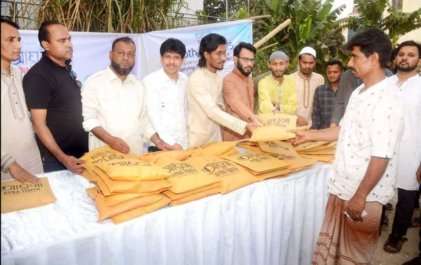
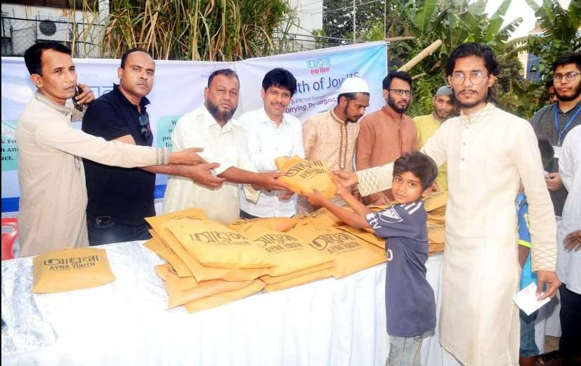
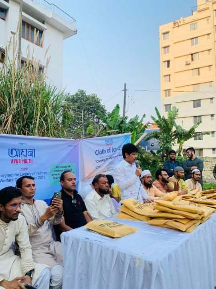
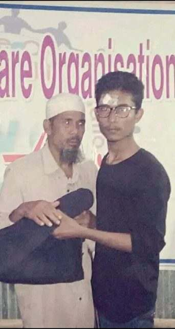
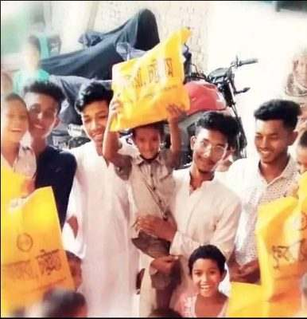
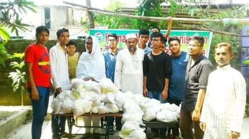
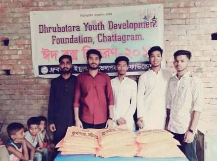
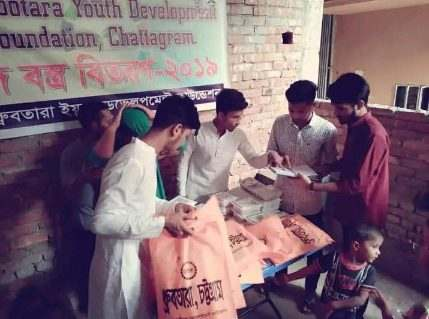
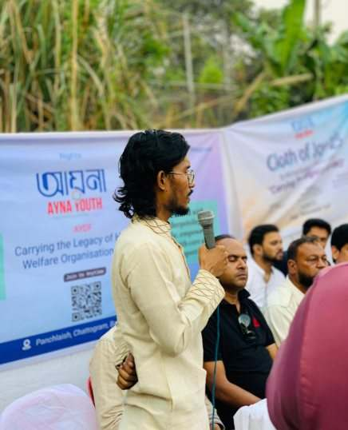
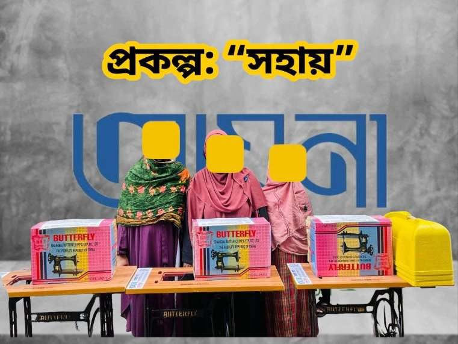
Arif's committees meet every month to plan the next programme, review the last one and recognise members. Over 11+ years he has chaired more than a hundred such meetings; only a few were photographed.
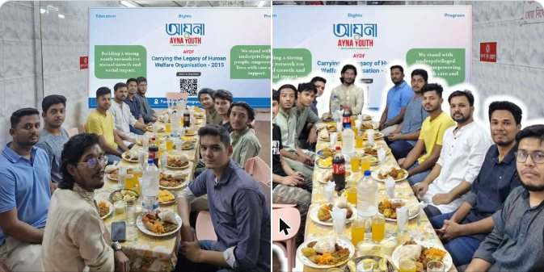
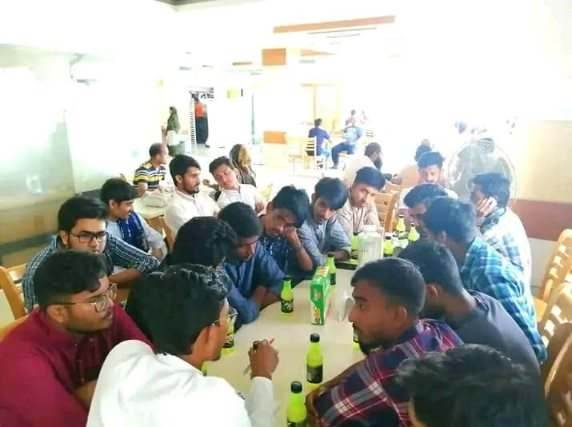
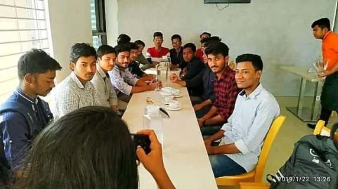
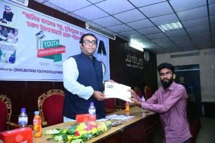
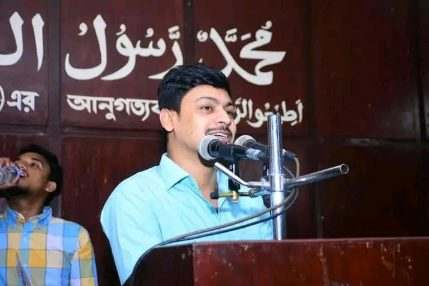
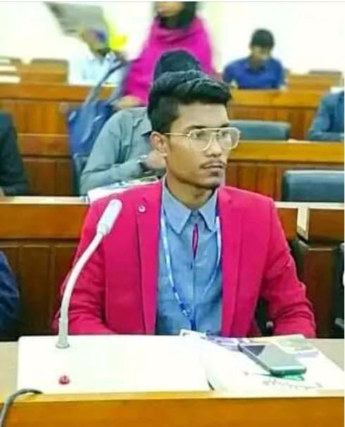
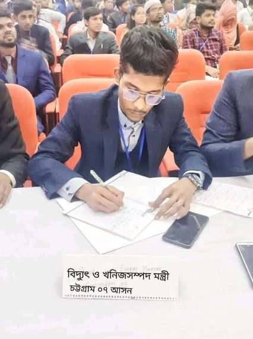
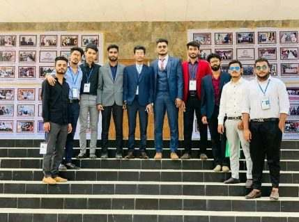
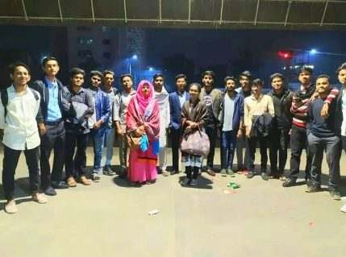
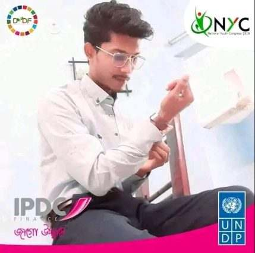
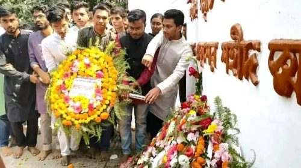
That he can raise funds with no budget, build volunteer teams that keep going, and reach hundreds of people at a time, with independent press to show for it.
The training, research skills and international network to take this beyond one division. Grassroots work stays small without them.
AI-driven health technology from his work as Chief Architect at WIOCARE, joined with youth networks that already know how to reach the people who need it.
| Item | Where to check |
|---|---|
| Newspaper and TV reports | Kaler Kantho · HWO page (Azadi, Suprabhat clippings) · AYDF clippings post · Rajdhani TV · Eye TV Bangla |
| HWO founding and drives | facebook.com/HWO2015 |
| AYDF projects | facebook.com/aynaaydf |
| DYDF role, conferences, Youth Parliament | Arif's activism page · facebook.com/dydfbd |
| DYDF committee approval | Email from DYDF's CEO (available on request) |
| Professional work (AI, engineering, research) | arif-s-portfolio-cuki.vercel.app · github.com/sheikh1971 |
| Research preprint | doi.org/10.21203/rs.3.rs-11656703/v1 |